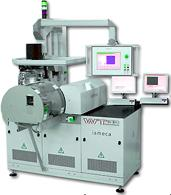

Laser Marking
Laser Marking
is the process of placing marks on
the package of a semiconductor package using a laser beam. Laser marking
is the other major alternative for marking semiconductor packages aside
from ink marking.
Laser, which
stands for "light amplification through stimulated emission of
radiation", is simply a high-intensity beam of light emitted by atoms
that have been supplied with enough energy either by optical or
electrical means.
Optical
stimulation is primarily applied to a solid and usually crystalline
material, using special lamps or diode bars to bombard the material with
wavelength-specific light. On the other hand,
electrical
stimulation employs either a DC or RF signal to excite gas atoms.
The optical
or electrical excitation of the atoms of the laser material causes their
electrons to absorb energy and move to a higher energy level. They
subsequently return to a lower energy level, releasing photons in order
to do so. These photon emissions build up into the laser beam as
more and more photons line up in phase.
Among
solid-state lasers, the
Nd:YAG
laser is the most
widely used
for laser marking. Nd:YAG stands
for
'Neodymium:Yttrium Aluminum Garnet'.
Among gas lasers, the
CO2
laser is the most
popular, wherein carbon dioxide is excited into emitting an infrared
beam that can engrave a mark on the surface.
All
laser beams,
regardless of type or source, are: 1)
monochromatic,
or of single color; 2)
highly
collimated,
or can travel over large distances without spreading too much; and 3)
coherent,
or possess light waves that are in phase with each other.
|
 |
|
Figure 1.
Example of a back-end handling equipment from Ismeca
that's also capable of laser marking |
Laser marking
is a
non-contact
thermal
process that alters the surface to be marked by using the heat generated
by a laser beam. There are three major ways to achieve mark
contrast by laser marking. These are: 1)
surface
annealing,
which applies relatively low temperatures to metallic surfaces to
produce sharp, contrasting lines with very shallow penetration (making
it non-disruptive to the surface); 2)
surface
melting,
which is commonly used to induce a color change on plastic surfaces by
melting the marking areas; and 3)
material
vaporization,
which marks a surface by removing material from it through vaporization.
Among these three, material vaporization is the most common method used
for industrial marking.
A laser
marker must allow its operator to optimize some parameters to produce
excellent markings on the surface. Two common parameters for this
purpose are the
lamp current
and the
laser pulse rate.
The lamp current determines the power or energy being used to stimulate
a material into photoemission, i.e., increasing the lamp power increases
the laser amplification. The pulse rate, on the other hand, determines
the amount of time between laser 'bursts' are allowed to strike a
surface. A higher the pulse rate shortens the time for the laser
system to charge up and therefore lowers the peak energy of the laser
beam, reducing its ability to vaporize some material from the surface.
Thus, vaporization capability is increased by using high-energy laser
beams at lower pulsing frequencies.
The
advantages
of laser
marking over ink marking include: 1) better marking capabilities; 2)
permanence of the mark; 3) high speed of marking; 4) short set-up or
changeover time; 5) elimination of ink costs; 6) elimination of mess
caused by ink; and 7) easier integration into other processes or
operations.
HOME
Copyright
©
2005
EESemi.com.
All Rights Reserved.